Diseño de páginas Web (Enfocado en Frontend)
Desarrollo sitios web visuales, funcionales y totalmente adaptables, utilizando HTML, CSS y JavaScript,
además de frameworks como Bootstrap. Me enfoco en la experiencia de usuario (UX) y la presentación visual (UI),
con especial atención a que cada diseño sea intuitivo, responsivo y moderno.

Diseño de 3D
Me especializo en la creación de modelos 3D usando herramientas como Blender, Maya, ZBrush, Substance Painter, NifSkope y Outfit Studio.
Tengo experiencia tanto en modelado para impresión 3D como para videojuegos, cuidando tanto el detalle técnico como el estético.

Comisiones de ilustración
Realizo ilustraciones a medida para proyectos personales o comerciales, desde concept art hasta personajes tipo cómic caricaturesco.
Mis ilustraciones se adaptan a narrativas visuales como cuentos, cómics, logotipos o material promocional.

Diseño publicitario para redes sociales
Diseño piezas gráficas impactantes para plataformas como Instagram, Facebook o TikTok,
adaptando el contenido al estilo de cada red y al público objetivo.
Desde banners animados hasta publicaciones visualmente atractivas para campañas.

 Slide.png)